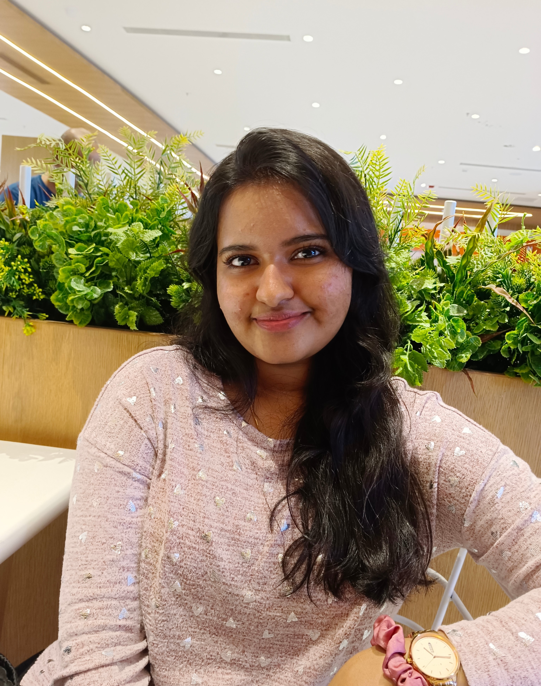

About
Hello, I'm Lakshitha, a young professional who is passionate about Data Science and Marketing Analysis. I have always found them to be incredibly intriguing for my style of business, as my interest in both the technical parts of data science and the creative difficulties of marketing puts me in a position to contribute effectively to innovative and data-informed marketing initiatives. I'd also like to mention that I enjoy taking on new tasks and working with diverse technologies every day.
Beyond the classroom, I'm involved in many extracurricular activities. I am an active member of my college's Youth Red Cross Club, where I have organised many social events and workshops. I also coordinated the cultural programme at my college once. These experiences have not only allowed me to make new friends but also to develop important life skills like teamwork, leadership, public speaking, and more. And I was also in the Advanced Yoga Club at my school, where I learned the importance of mental health and mindfulness.
Apart from academics, you can often find me buried in books or meditating. I'm particularly enthusiastic about sci-fi novels, Sherlock Holmes, and fantasy novels. I also adore reading poetry.
Looking ahead, I aspire to pursue a master's or doctoral degree in Data Science, allowing me to delve deeper into my area of expertise. These aspirations are not set in stone, and I'm open to the opportunities and challenges that life may bring. The prospect of personal development, learning new things, and having a positive influence on the world around me excites me the most.
Amidst these goals, I'm committed to maintaining a healthy work-life balance. I want to put my health first, enjoy life's simple joys, and spend quality time with my loved ones. Success is vital, but so is happiness and fulfilment in the little things life brings.
Thank you for taking a moment to learn a bit about me. I'm always open to engaging in meaningful conversations and forging new connections. Don't hesitate to reach out.